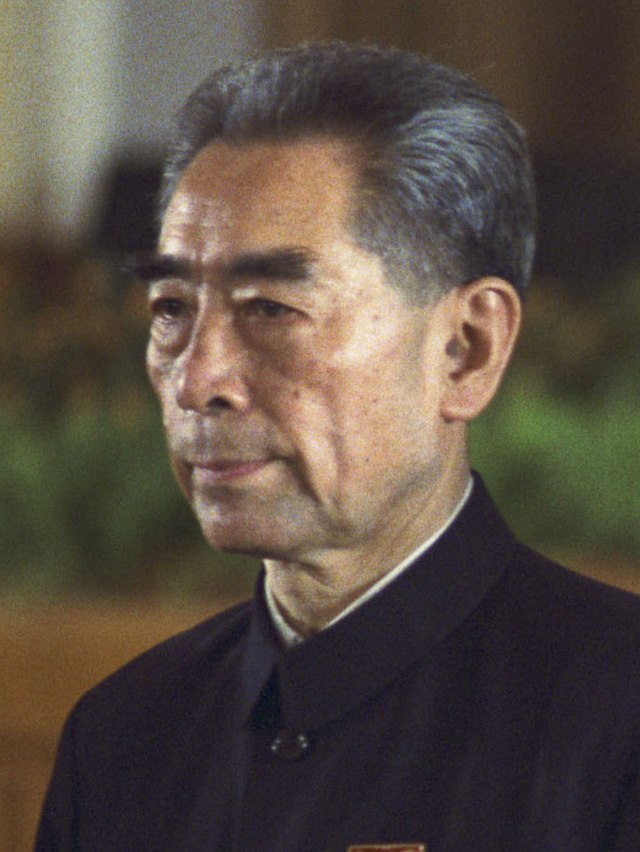
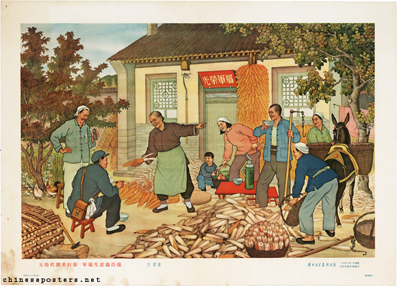

Founding Leaders
- Mao Zedong
Founding member of the Chinese Communist Party. He lead the Communist forces to a victory against the nationalist. His political ideologies shaped the nation for many decades after his death in 1976
- Zhou Enlai
First Premier of Communist China. He is known for his diplomatic skills leading to better relations with the West


Plans for Collectivization
- Collectivized Farming
The Chinese also deployed collectivized farming like the Russians. Despite being a little more succesful than the Russians, 50+ million still starved in what is known as "The Great Leap Forward"

Internal Issues
-
Economic Hardship
- The people of Communist China aren't affluent, due to the mismanagement of state-owned enterprise, such as the communial farms.
-
Human Rights Abuses
- Communist China has been known for its human rights abuses, such as censoring free-speach, persecution of religious minorities, and forced labor. These are issues that still occur to this day. Examples are this are internet censorship, and the genocide of the Uigurs
Foreign Entanglements
- Proxy Wars
- Like the USSR, Communist China supported both Communist Korea and Vietnam, during each country's split.
- Sino-Soviet Split
- The USSR and Communist China were once allies, but their alliance split due to political differences. This resulted in both countries not working together in unison anymore
- Territorial Disputess
- China has been wanting to reunite with Taiwan, which it considers a province. This has been a large contribitor to tension between the USA and China.
- China has also had territorial disputes in the South china Sea. This had lead to tensions with those countries and the USA
Reform Attempts
- Great Leap Forward
- Cultural Revolution
- Anti-corruption Campaign
-
A reform that was launched in 1958 that aims to modernize China's economy and society, by mass mobilization, and communial agriculture. This lead to massive famine and economic collapse.
-
The Cultural Revolution was a radical poltical movement that aimed at purging capitalist elements from society, and replacing it with Communist culture.
-
The anti-corruption campaign is a more recent reform in order to combat Chinese political corruption. This campaign has led to the punishment to thousands of officials in China.